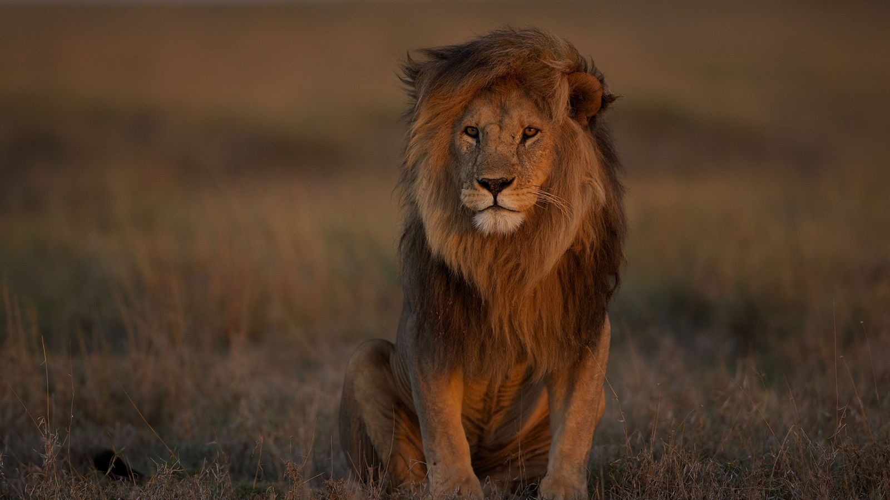

- O leão é conhecido como o "Rei da Selva" devido à sua imponência e força.
- Os leões são os únicos felinos que vivem em grupos sociais chamados de "manadas".
- Os leões machos possuem uma juba que os diferencia das fêmeas.
- Os leões são excelentes caçadores, sendo capazes de derrubar presas de grande porte, como zebras e búfalos.
- Habitat: Os leões são encontrados principalmente em savanas, pradarias e algumas áreas de floresta da África Subsaariana.
- Características físicas: Os leões adultos têm um comprimento de corpo de cerca de 1,4 a 2,5 metros e uma altura de ombro de cerca de 1 metro.
- Hábitos alimentares: Os leões são carnívoros e são conhecidos como predadores de topo em seus ecossistemas.
- Comportamento social: Os leões vivem em grupos chamados de "coalizões" ou "manadas".
- Ciclo de vida: As leoas são as principais cuidadoras dos filhotes.